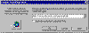

| ||||
When your FrontPage-based Web site is ready to be published on the World Wide Web -- or on your company's intranet -- the FrontPage Explorer makes it easy for you to transfer the pages and files to the World Wide Web while automatically verifying the addresses of pages and the paths to your files.
Note: If you do not want to actually publish the Personal Web to your Web server, you can use the following exercises as reference without actually completing the steps.
Figure 1. The Publish button
The Publish FrontPage Web dialog box is displayed. In this dialog box, specify the location on the World Wide Web or your corporate intranet to which you want to publish your FrontPage-based Web site. You need Internet access through an Internet Service Provider before you can publish to the World Wide Web.

Click image to enlargeFigure 2. Specifying the publishing location
Your Internet Service Provider can tell you this information. See also "Create Your Web Site with Microsoft FrontPage 98".
The FrontPage Explorer publishes the FrontPage-based Web site from your computer to the intranet Web server or World Wide Web server you specified.
If FrontPage detects that you are publishing to a Web server that does not have the FrontPage Server Extensions installed, it will launch the Microsoft Web Publishing Wizard to publish your FrontPage-based Web site via the FTP file transfer protocol.
If the Web server to which you are publishing your FrontPage-based Web site has the FrontPage Server Extensions installed, your FrontPage-based Web site will have full functionality when it is published.
If you publish your FrontPage-based Web site to a Web server that does not have the FrontPage Server Extensions installed, certain FrontPage Components, such as the Search component, will not work.
Did you find this material useful? Gripes? Compliments? Suggestions for other articles? Write us!
© 1999 Microsoft Corporation. All rights reserved. Terms of use.